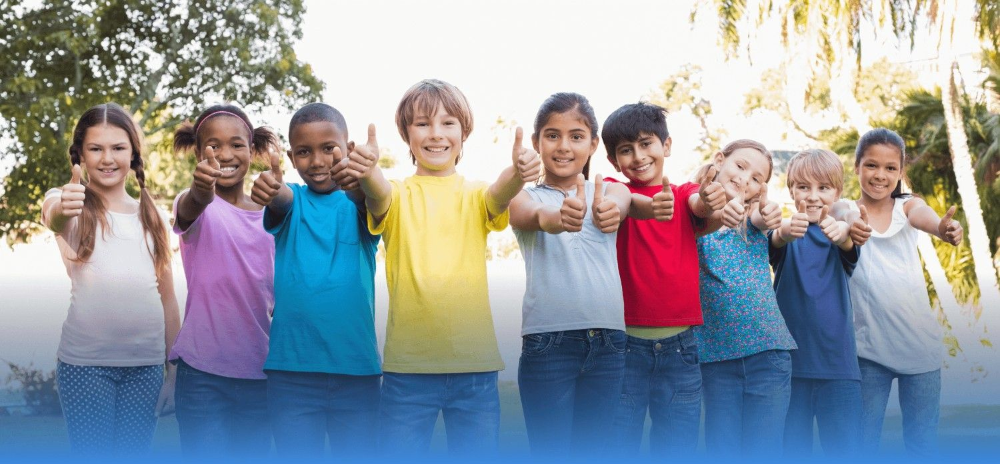
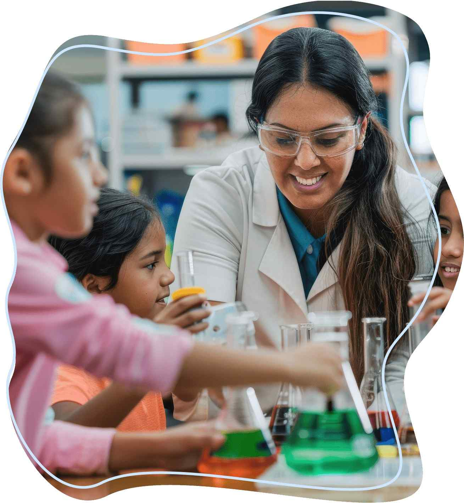
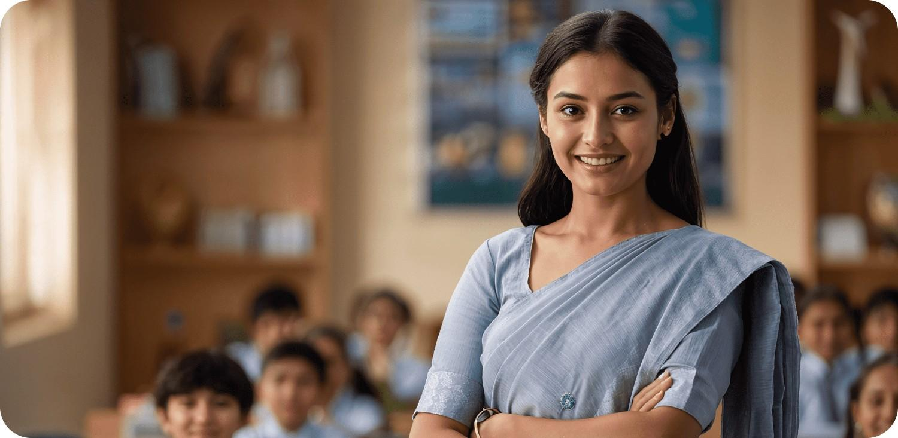
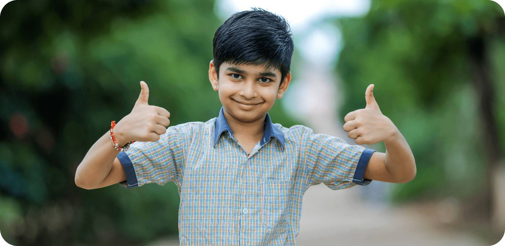

Equip Your Students With Future Ready
Skills
That Matter
Skill 2 Skool enables schools to deliver new-age skill education aligned with NEP 2020, NCF 2023, SAFAL, and SQAAF, ensuring students are prepared not just for assessments—but for life beyond the classroom. Our skill ecosystem is designed to complement academics while strengthening competency, confidence, and real-world readiness.
Skill 2 Skool Skill Framework
Structured. Aligned. Measurable
Skill 2 Skool provides schools with a structured skill framework that focuses on
Competency-based learning
We provide simple, practical learning tools that help teachers upgrade skills and stay confident in the classroom.
Experiential and application-oriented pedagogy
Our structured courses, expert guidance, and real-world strategies support every stage of a teacher's professional growth.
Observable and documentable student outcomes
Track student progress with structured observation tools that make learning outcomes visible and reportable.
Seamless integration into existing school systems
Designed to complement your school's current schedule, curriculum, and processes without disruption.
Skill Readiness & Student Mapping
Understanding Strengths Beyond Marks
Skill 2 Skool supports schools in identifying and nurturing student strengths through structured observation, reflection, and skill mapping. By focusing on aptitude, interest, and behaviour patterns, schools gain deeper insights into student potential—supporting informed guidance, confidence building, and holistic development.
Skill Readiness & Student Mapping
Start Learning What Matters
No Course Found

Engaging Skill Learning
Designed for Active Participation
Our learning design emphasizes student engagement, interaction, and application. This approach improves retention, participation, and skill transfer, moving learning beyond passive instruction.
- • Activity-driven sessions
- • Collaborative tasks and challenges
- • Real-world scenarios and simulations
- • Reflection and presentation opportunities
Skill Readiness & Student Mapping
A Skill Ecosystem for Your School
Skill 2 Skool enables schools to offer exposure to diverse skill domains, supporting well-rounded development across cognitive, creative, digital, and life skills. These domains collectively contribute to

Skill Readiness & Student Mapping
Alignment with SAFAL & SQAAF

Skill 2 Skool contributes to key SQAAF domains, including
- • Curriculum & Pedagogy
- • Student Development
- • Teaching-Learning Practices
- • School Culture & Quality Processes
Skill 2 Skool strengthens competencies assessed under SAFAL by promoting
- Application-based learning •
- Reasoning and analytical thinking •
- Communication and expression •
- Student confidence and engagement •
